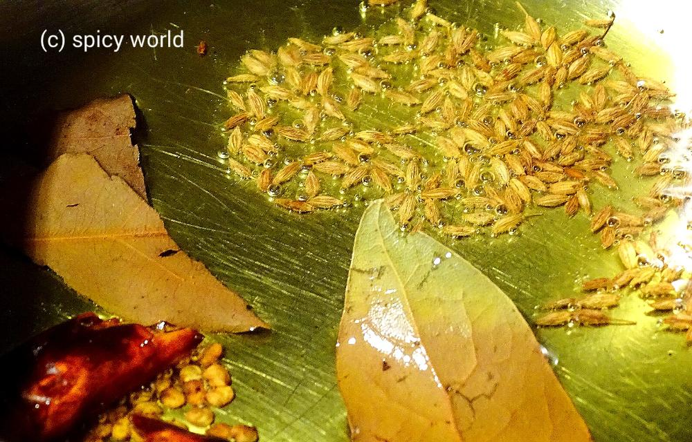
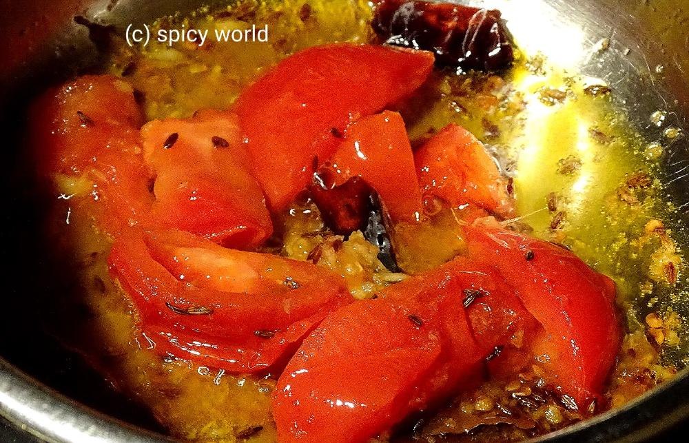
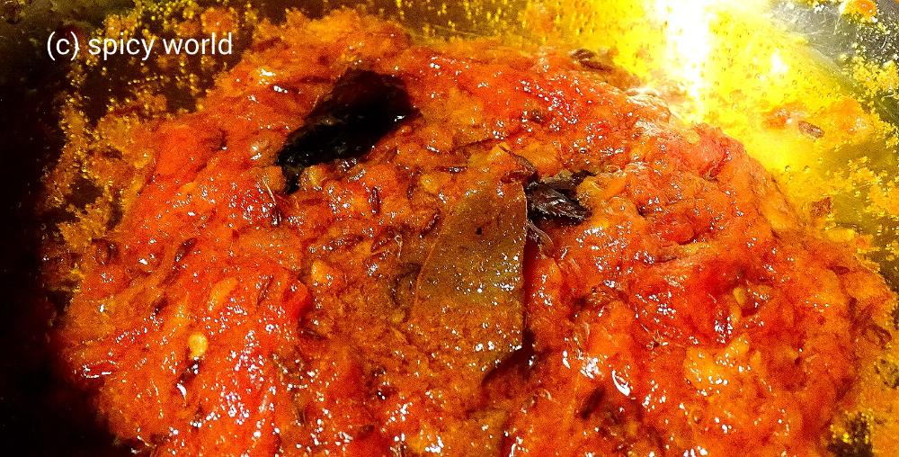

Niramish Aloo Torkari
This is a no onion and no garlic recipe. Usually in many 'puja's we make this kind of dishes. 'Potato curry' goes very well with 'luchi', 'paratha', 'kochuri' etc. But last tuesday I tried a new combo with 'bhatura'. Magically we both loved and enjoyed it very much. I learned this potato curry from my mom. She also follow the same recipe for 'niramish aloo dom' and it tastes always good. Try this new combo and I am sure you will love them too.

Ingredients
- 2 big potatoes peeled and cut into cubes.
- 1 tomato chopped.
- 1 Teaspoon ginger paste.
- 3 green chilies.
- Whole spices (1 Teaspoon cumin seeds, 1 bay leaf, 1 dry red chilli).
- Spice powder (1 Teaspoon turmeric powder, 1/2 Teaspoon red chilli powder, 1/2 Teaspoon cumin powder).
- Salt and sugar.
- 6 Teaspoons mustard oil.
- Warm water.
Steps
Heat mustard oil in a pan.
Add the whole spices in hot oil. If you like you can also add pinch of 'hing' / asafoetida in this stage. Saute it for 30 secs.

Now add the ginger paste and chopped tomato with pinch of salt. Mix it and cook it for 5 minutes.

When the tomato become mushy add all the spice powder and 1 tsp sugar. Mix it well for 4 minutes.

Add the potatoes and green chilies. Mix this with masala very well for 5 minutes.

Then add some warm water and some salt. Cook this untill the potatoes are fully done.

Check the seasoning and consistancy of the gravy.
Turn off the heat.
Your Niramish aloo torkari is ready.
- Enjoy this hot with luchi, paratha, bhatura, naan ...
")